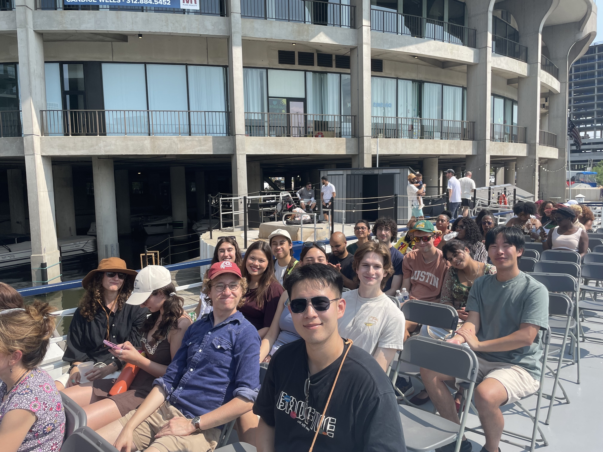
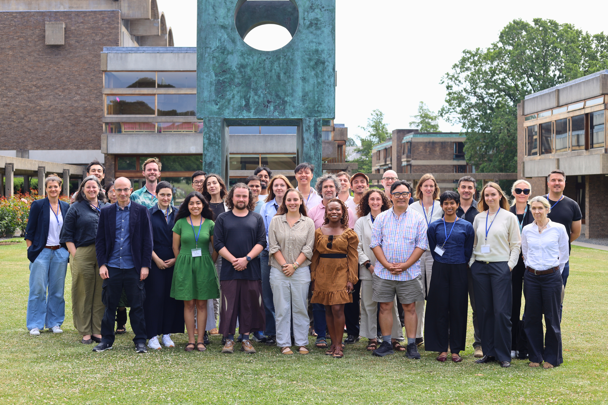

A 10-week, in-person research program for students and early-career researchers working on AI safety and security, nuclear security, or the confluence of these issues. Unlike more established fields, the field of AI safety and security has not yet reached a consensus on what the foundational problems are — dedicated junior researchers can reach the intellectual frontier with just months of focused work.
Each fellow scopes their own research question, justifies its importance, identifies appropriate methods, and delivers a significant written product — advised by a domain expert mentor, but with the intellectual direction entirely their own. This is not a research assistantship; it is practice for leading your own research program.

Program Details
STIPEND
$10,000 stipend, UChicago dorm housing, full dining hall meal plan, and funds for weekday lunches.
Disbursed in two installments, not contingent on any specific research output.
COMPUTE
Technical fellows receive $4,000 in compute and API credit support.
Usable across major cloud and API providers, based on your methodology.
MENTORSHIP
Regular one-on-one check-ins with a research manager and a domain-expert advisor throughout the program.
Mentors drawn from XLab staff, UChicago faculty, and outside researchers.
WORKSPACE
Dedicated coworking space on the University of Chicago campus.
24/7 badge access alongside the rest of the cohort for the full 10 weeks.
PROGRAMMING
Workshops on forecasting, open-source intelligence, and research methodology, plus Q&A with policy practitioners.
Past sessions: RAND, the Federation of American Scientists, the Bulletin of the Atomic Scientists.
COMMUNITY
A cohort of 15–20 peers working on related problems, with social events and shared living spaces.
A shared dorm floor and a cohort Slack that stays active long after the program ends.
Research Areas
Our program focuses on AI strategy, security, and governance, and nuclear weapon security. But we see these areas not as separate issues to be siloed, but facets of the same problem — a single research question can cascade across domains.
The satellite imagery techniques that track compute buildups for AI governance also inform long-standing questions about arsenal survivability. As AI intensifies great-power competition, nuclear-armed states may face use-it-or-lose-it pressures if they believe AI-enabled technology will render their arsenals vulnerable.
We especially encourage proposals using open-source intelligence, forecasting, strategic net assessment, or scenario analysis — though we're just as excited to review technical governance, AI security, and applied AI research.
Who Should Apply
- Demonstrated commitment to a career in AI safety, security and governance, or nuclear security
- Substantive familiarity with the field and its open questions
- Shown ability to work and think independently
No technical background is required, but fellows pursuing technical projects are expected to have completed ARENA or similar material. If you're on the fence, we encourage you to apply.
We are only able to accept fellows with US work authorization — US citizens, permanent residents, or international students currently on a valid F-1 visa. We are unable to sponsor visas.

alumni since 2022, now at OpenAI, RAND, Google DeepMind, MATS, SecureBio, the Federation of American Scientists, the Institute for Progress, MILA, the intelligence community, congressional offices, and leading PhD programs.
SELECTED OUTPUTS
Fellow Testimonials
“I have loved every minute of x-lab, particularly the opportunity to meet so many like-minded but uniquely smart people working on subject areas different from mine.”
“It was quite different from what I anticipated but in a better way — there was a good amount of interaction with my cohort that I didn’t expect.”
“I didn’t anticipate having so much freedom. While it was intimidating at first, it was definitely the challenge I needed.”